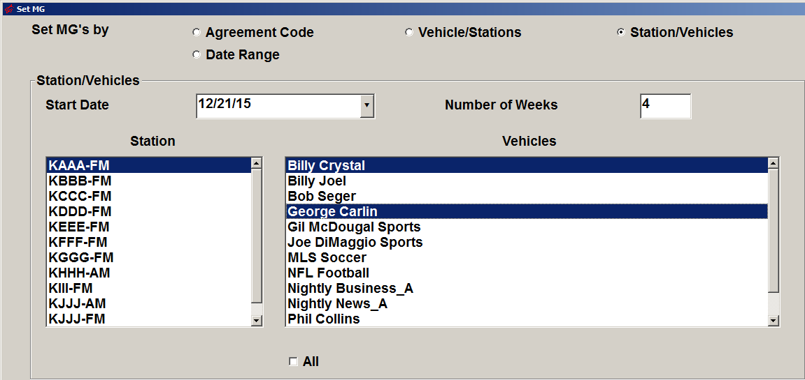

Set MGs
Overview
Available on version 7.0 and above, the Set MGs (set makegoods) utility is used to set a “makegood” flag on affiliate spots that were marked by a station website user as airing outside of the pledge week and were imported in the past (prior to this feature being implemented). It also creates a missed spot for the original fed spot so that each makegood has a missed spot that it ties back to.
The makegood flags will be set automatically when importing the spots when the software for this feature is installed, so the utility is designed to set the makegood flags for spots that were imported in the past if needed.
Makegood spots and the corresponding missed spots can be viewed on the Affiliate Affidavits screen and the Affiliate Management screen. The example below is from the Affiliate Affidavits screen and shows what is displayed after running the utility to set the makegood flag for a makegood spot.
When viewing the original fed week, the spot that was madegood will appear with the status of “5-Not Aired”. When holding the mouse over the status, the makegood date and time will appear, as shown in the red boxed area below.
When viewing the week that the makegood is in, the makegood spot will be shown with a status of “MG”, with the missed date and time shown in the mouse-over popup.
Running the Utility
Access the Set MGs utility from the File menu -> Utilities -> Set MGs.
This utility has four ways it can be run:
- Agreement Code
- Vehicle/Station
- Station/Vehicles
- Date Range
The different methods can be selected by selecting the corresponding radio button near the top of the screen.
The utility logs what was processed in the log file “SetMGAffiliateSpots.txt”, which can be retrieved from the Data\Messages folder.
The following sections describe the different ways the utility can be run.
Agreement Code
The agreement code method can be used when only one agreement requires updating, and the agreement code is known.
- Enter the agreement code in the “Agreement Code” field. (The agreement code is a unique number assigned to each agreement in the system.)
- Enter the start date of the first week that requires processing in the “Start Date” field.
- Enter the number of weeks to process, then press the Set MG button to begin processing.
Vehicle/Stations
The Vehicle/Stations method can be used when there is a single vehicle with one or more stations that require updating.
- Enter the start date of the first week that requires processing.
- Enter the number of weeks to process.
- Select the vehicle.
- Select one or more stations to process, then press the Set MG button to run it.
Station/Vehicles
The Station/Vehicles method can be used when there is a single station with one or more vehicles that require updating.
- Enter the Start Date.
- Enter the Number of Weeks to process.
- Select the Station.
- Select one or more vehicles.
- Press Set MG to begin processing.

Date Range
The Date Range method is used to update all affidavits within a range of dates.
Simply enter the start and end date then press the Set MG button to use this method.
To run it for all dates, the start and end dates can be left blank.